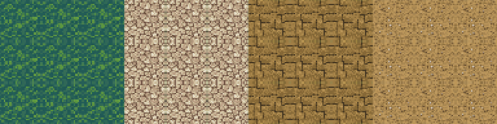
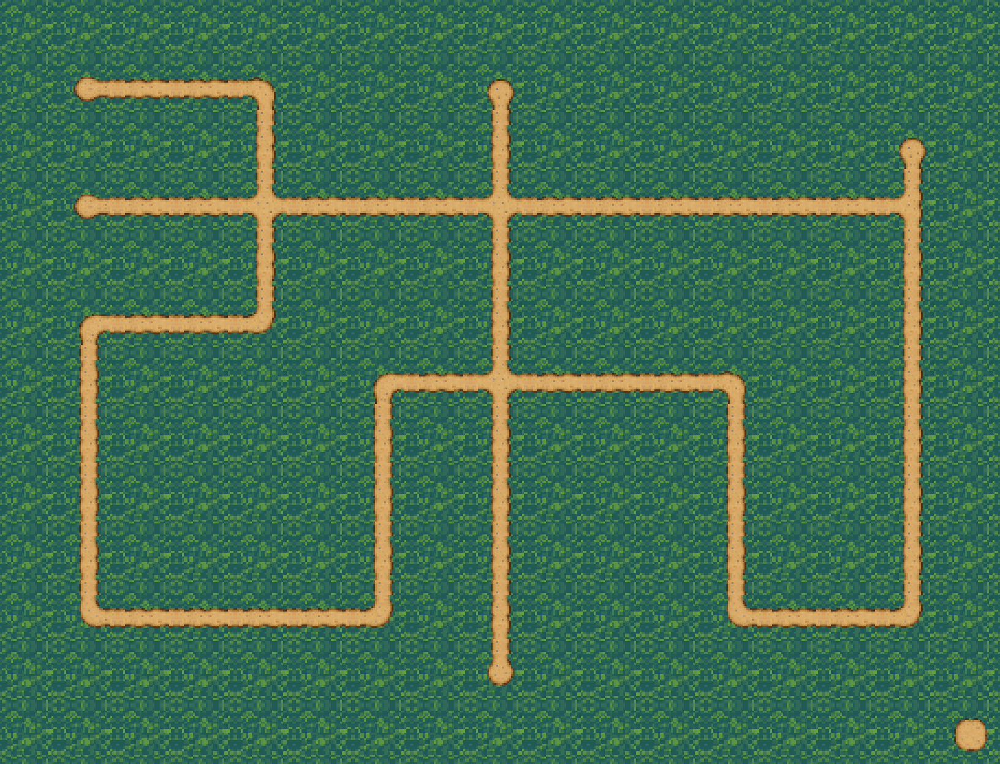
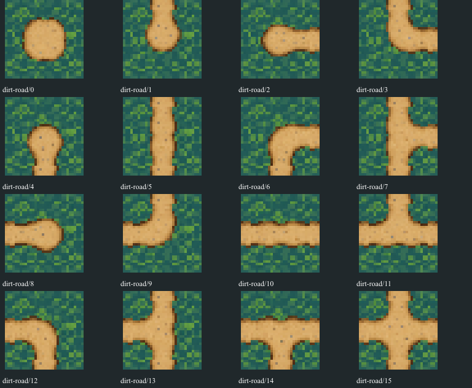
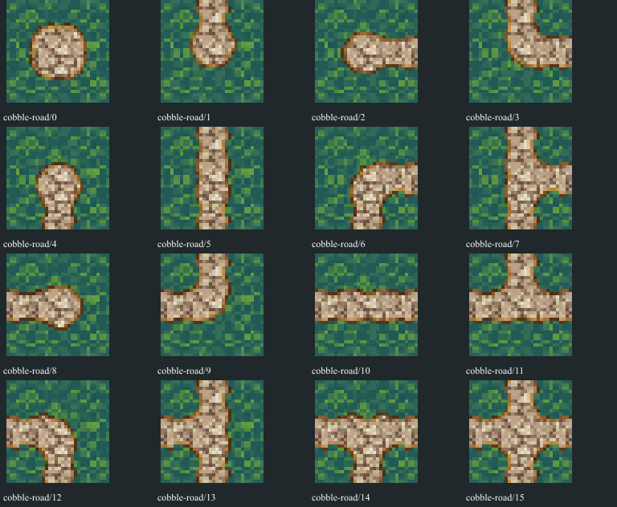
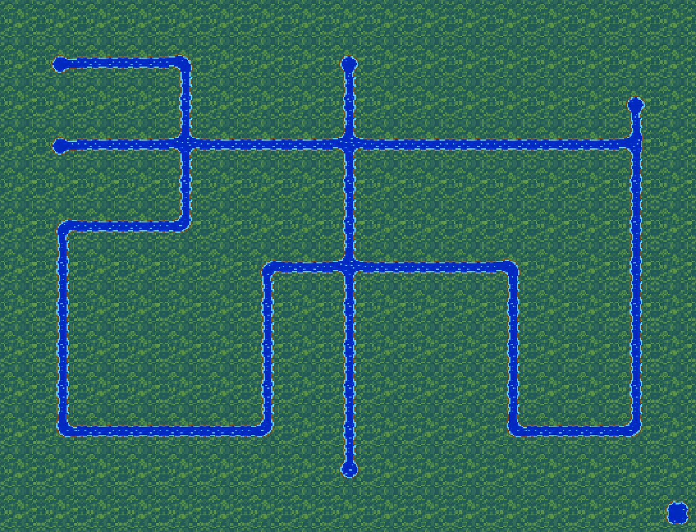
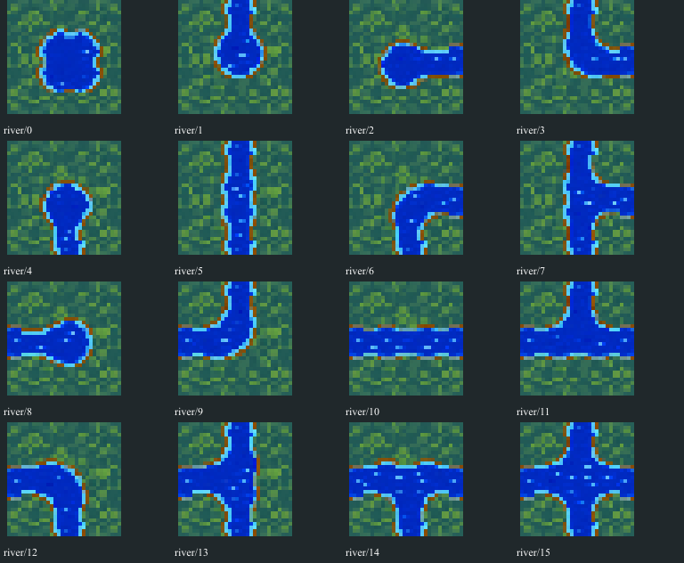
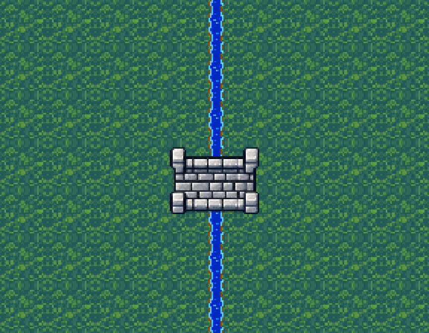
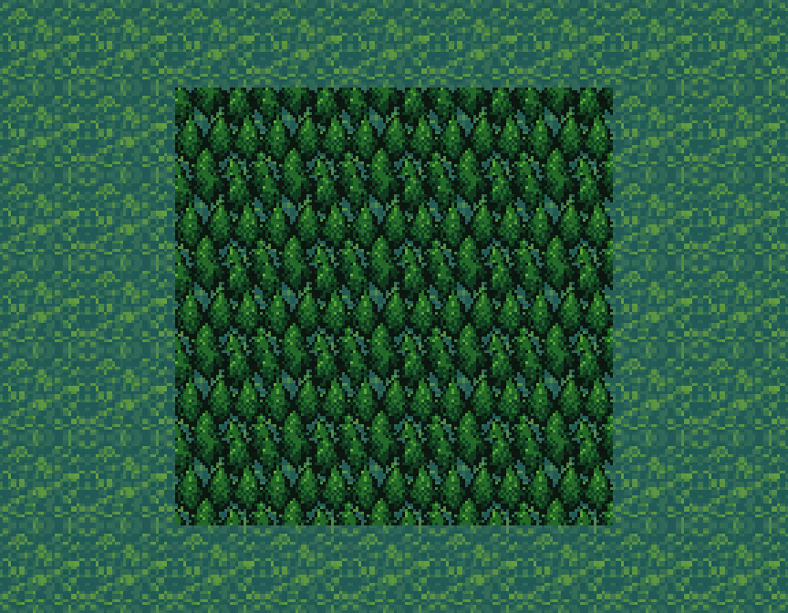
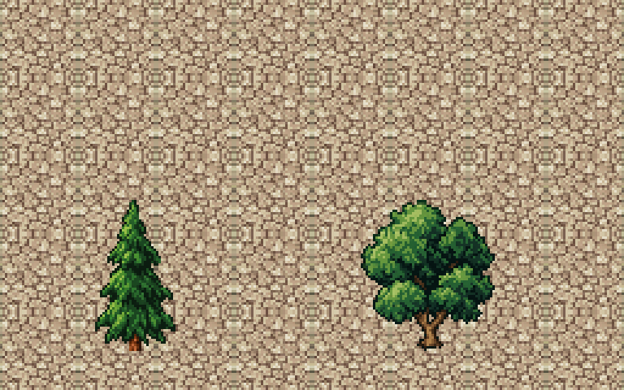

Shared grounded grass, city cobble, shop flagstone, dirt and cobble roads, rivers, city trees and overworld forest. Native32 terrain; no game integration.
Mechanical verification · Sources, masks, semantic ports and hashes · Original FFII PR comparison







Visual placement only; old bridge endpoints, collision and traversal are not certified.


Exact four-pixel registered edge bands are a mechanical contract only for declared compatible terrain/network portals. Full cobble plazas and narrow cobble paths are separate material roles, not certified plaza transitions. Collision fields are intent only. Visual fidelity and source-contour quality remain separate QA.